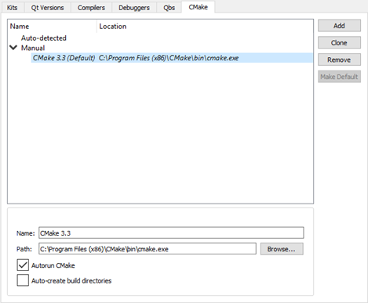
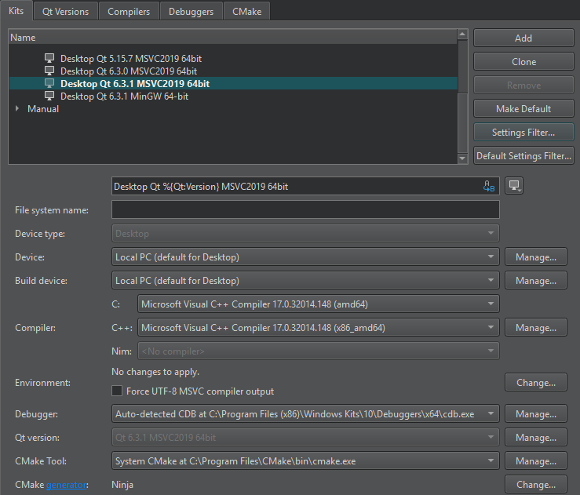

Setting Up CMake
CMake automates the configuration of build systems. It controls the software compilation process by using simple configuration files, called CMakeLists.txt files. CMake generates native build configurations and workspaces that you can use in the compiler environment of your choice.
Qt Creator automatically detects the CMake executable specified in the PATH. You can add paths to other CMake executables and use them in different build and run kits.
Qt Creator automatically runs CMake to refresh project information when you edit a CMakeLists.txt configuration file in a project. Project information is also automatically refreshed when you build the project.
Adding CMake Tools
Qt Creator supports CMake version 3.0, or later. For best results you should use CMake version 3.7.2 with server-mode support, or later. Earlier versions provide less information to the code model, which will then fail to resolve includes and defines.
To specify paths to CMake executables:
- Select Tools > Options > Kits > CMake > Add.

- In the Name field, specify a name for the tool.
- In the Path field, specify the path to the CMake executable.
- Select the Auto-create build directories check box to automatically create build directories for CMake projects.
- Select Apply to save your changes.
Note: When the Autorun CMake check box is enabled, Qt Creator automatically runs CMake when you make changes to CMakeLists.txt files. We recommend that you do not disable this check box, because that would eventually make Qt Creator and the project disagree on what the project information is.
Select the Kits tab to add the CMake tool to a build and run kit. The kit also specifies the CMake generator that is used for producing project files for Qt Creator and the configuration variables that are used:

For more information, see Adding Kits.
Editing CMake Configuration Files
To open a CMakeLists.txt file for editing, right-click it in the Projects view and select Open with > CMake Editor.
The following features are supported:
- Pressing F2 when the cursor is on a filename to open the file
- Keyword completion
- Code completion
- Auto-indentation
- Matching parentheses and quotes
Adding External Libraries to CMake Projects
Through external libraries, Qt Creator can support code completion and syntax highlighting as if they were part of the current project or the Qt library.
Qt Creator detects the external libraries using the FIND_PACKAGE() macro. Some libraries come with the CMake installation. You can find those in the Modules directory of your CMake installation.
Note: If you provide your own libraries, you also need to provide your own FindXXX.cmake file. For more information, see Writing FindXXX.cmake files.
Syntax completion and highlighting work once your project successfully builds and links against the external library.